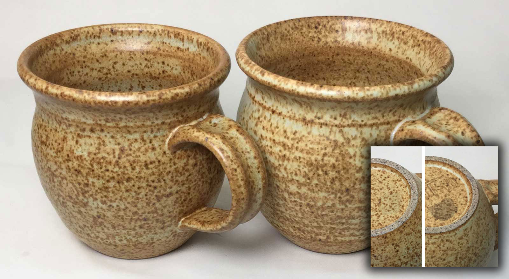
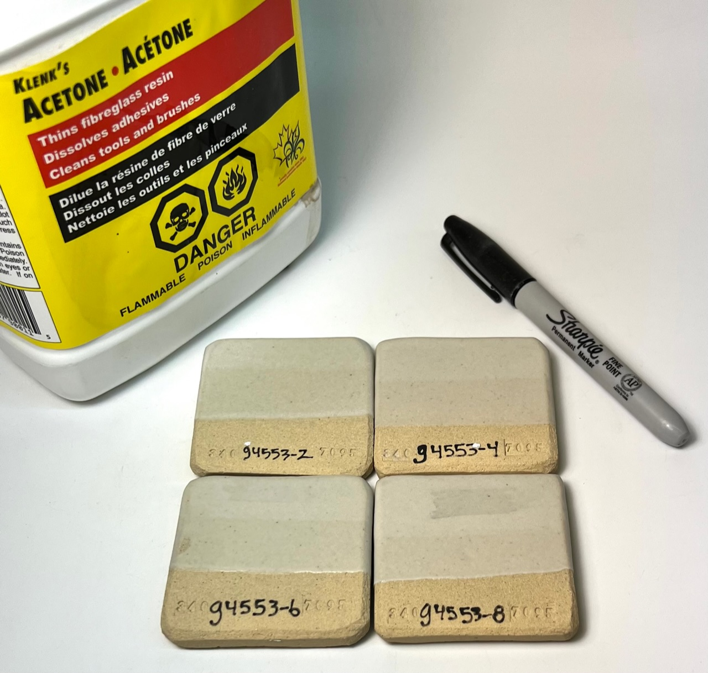

Staining of Fired Ceramic Glazes
Ceramic glazes are glass. That means they are always easy to clean, right? Wrong - because the surface is not always glassy.
Details
Ceramic glazes are glass and thus should be micro-smooth. If they are not then stains can be left by various substances. Susceptibility to staining can be caused by insufficient melting, over melting (with micro-crystallization), micro-bubbles leaving tiny cavities, or particles of refractory material remaining unmelted at the surface. Rough surfaces can thus trap particles and be difficult or impossible to clean, even though it is glass. The causes that lead to issues with staining also often produce cutlery marking. Glazes fire the way they do because of their chemistry, firing schedule, mixing and application process and thickness. They need enough flux to melt, enough SiO2 to develop a good glass and enough Al2O3 to be hard and durable. Glazes also need a cooling rate in the firing that will create a non-devritified glass. By comparing the chemistry and recipes of glazes that do and do not stain (in your account at insight-live.com) you can develop an understanding of how to resolve this issue in your recipe(s).
We are discussing glazes intended for functional ware. Of course, certain decorative ones depend entirely on NOT melting completely or crystallizing profusely. Others develop crystallization during cooling, these affect surface smoothness also. Susceptibility to staining is not just important for tableware, and even sanitary ware, but also for ceramic tile. Technicians test with timed exposures to common household items like red wine, coffee, ketchup, various oils and inks, and more.
Related Information
Staining of a sanitaryware glaze after years of use

This picture has its own page with more detail, click here to see it.
This problem typically happens after some years of use. Here are some questions to answer:
A glaze may look smooth visually, but is it really? If the surface has micro-cavities and surface disruptions this could give organics a place to attach and build up. Firing curves need to take into account the LOI of glaze materials (which can affect the microsurface), materials like calcium and barium carbonate, dolomite, talc and even clay.
Has the mirco-surface of the glaze changed? Many labs offer surface analysis services so it is possible to have a surface compared with one known to be good.
Is the glaze subject to leaching? This could happen if the fired matrix has excessive phase changes, possibly due to poor mixing, frit quality issues or materials of excessive particle size (e.g. use 400 mesh silica instead of 200 or 300). A change in the flow of a routine melt fluidity test can alert you to changes in materials or slurry preparation.
Zircon is implicated in cutlery marking, if your glaze is marking this puts suspicion on the zircon as at least part of the problem. What grade of zircon do you use? It should be 5 micron. Are you using high-energy mixing to separate the zircon agglomerates?
Is your glaze fired at the temperature to produce optimum hardness and durability? Fire it higher and lower than the production temperature and test surface properties and melt flow. If you determine, for example, that it is under-firing, then add flux to melt it a little more. If it is under-fired, add SiO2 or Al2O3 or reduce flux (KNaO, MgO or CaO).
The bamboo matte on the left is better:
It does not stain and does not craze.

This picture has its own page with more detail, click here to see it.
These mugs are Plainsman H443. The cone 10R dolomite matte bamboo glaze on the left (A) has 3.5% rutile and 10% Zircopax added to our base G2571A dolomite matte. The one on the right (B) has the same addition but in a base having less CaO/MgO and much more KNaO. This gives it a craze-prone calculated thermal expansion of 7.9 (vs 6.7 for ours). B also stains badly (as can be seen from the felt marker residue that could not be removed using lacquer thinner). Why does A stain only slightly? It has an additional 4% Gerstley Borate, a powerful flux that develops the glass surface better (giving a slightly less matte surface).
Adding calcined alumina to a ceramic glaze until it stains

This picture has its own page with more detail, click here to see it.
The glaze is G2934 cone 6 matte base. Because it was not firing matte enough additions of 2, 4, 6 and 8% super fine calcined alumina were tested (Al2O3 is the key to matteness and this material is a pure source, if kaolin were added it would also source SiO2 and require much more). Each addition made it progressively more matte. But with the mattness comes increasing susceptibility to cutlery marking and staining. To test the latter we marked each using a felt pen and then cleaned off the black ink using Acetone. The only one with noticeable staining is the 8% addition (the 6% addition has a slight stain also). The testing also showed no obvious cutlery marked on any of them. The results are reassuring since only 2% or less alumina is needed to achieve the degree of matteness desired so no danger of either problem is indicated. In addition, the integrity of the fired glass suggests that the alumina is dissolving in the melt - that means it is likely contributing to increased surface hardness and durability.
Links
| Glossary |
Cutlery Marking
Ceramic glazes that mark from cutlery are either not properly melted (lack flux), melted too much (lacking SiO2 and Al2O3), or have a micro-abrasive surface that abrades metal from cutlery. |
| Glossary |
Ceramic Glaze Defects
Ceramic glaze defects include things like pinholes, blisters, crazing, shivering, leaching, crawling, cutlery marking, clouding and color problems. |
 PayPal | No tracking, No ads, No paywall, No transient content! Just organized, concise information constantly updated and improved. Was this helpful? Consider supporting me. |
| By Tony Hansen Follow me on        |  |
Got a Question?
Buy me a coffee and we can talk 

https://digitalfire.com, All Rights Reserved
Privacy Policy